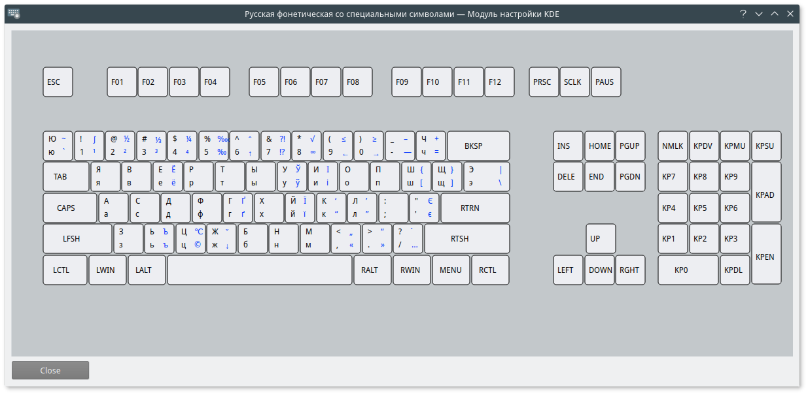

Расширенная русская фонетическая клавиатурная раскладка которая позволяет также вводить украинские и белорусские буквы, а также символы дореформенной орфографии.
Эта раскладка сделана для удобного ввода русских, украинских и белоруских букв, математических символов и знаков пунктуации. Она была сделана с оглядкой на раскладку Бирмана, но без уймы ненужных типографских символов или других редко используемых (например знак фунта или градусы Фаренгейта).
Запустите install/install с привилегиями суперпользователя:
sh
sudo install/install
Он должен позаботиться об установке. В случае возникновения осложнений необходимо самостоятельно установить путь к директории XKB и запустить скрипт с параметром командной строки:
sh
sudo install/install -d /usr/local/X11/xkb

Скрипты основаны на «Рукби»